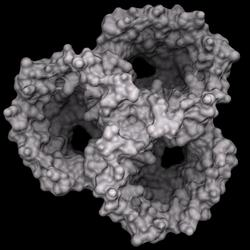
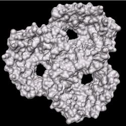
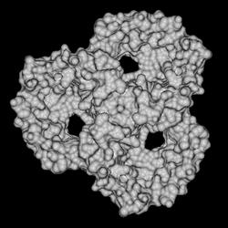
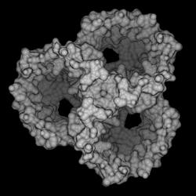
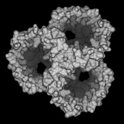

|
A common technique to emphasize the three dimensionsionality of a two
dimensional image is to use a depth-cueing effect, fading parts of the
three dimensional scene into the background depending on how far they are from
the observer. This is demonstrated below. Both pictures are directly from DINO.
The one on the left fades into the black background, while the one on the right
has equal intensity irrespective of the distance of the object from the
observer.

With depth-cueing
|

No depth-cueing
|
This depth-cueing effect is implemented using fog, in the case above black fog.
To achieve the same effect in POVray, light attenuation is used by adding
the following to each .pov file (some numbers may vary depending on the
scene):
// depth cueing
plane {z, 31.065
texture {pigment {color rgbft <0,0,0,1,1>}}
hollow interior {fade_power 2 fade_distance 18}
}
An infinite plane is defined along the xy-plane (normal pointing towards
positive z, ie away from camera) positioned at a z value of - in this case -
31.065 (which is the position of the near clipping plane in DINO). The
texture is set to a simple black and completely transparent surface -
after all, we don't want to see the plane, but the objects behind it.
This plane is also set to hollow, otherwise POVray would treat the area
behind the plane as solid! Just think of the are behind the plane as 'inside'.
The interior settings now finally specify how to treat the light behind
the plane (from the POVray manual):
The fade_distance value determines the distance the light has to travel
to reach half intensity while the fade_power value determines how fast
the light will fall off. For realistic effects a fade power of 1 to 2 should be
used. Default values for both keywords is 0.0 which turns this feature off.
The value for fade_distance is determined from the far clipping plane
position in DINO. For the example from above, here are the rendered scenes with
different settings:

no attenuation
|

fade_power 2.0 fade_distance 18
|
fade_power 2.0 fade_distance 12
|

fade_power 4.0 fade_distance 18
|
If you need to turn attenuation off, it is better to comment out the two
lines specifiying the plane rather than setting the values to zero, because the
scene will render much faster.
(c) 2001-2005 Ansgar Philippsen
| ){kind=link}
){kind=link}
){kind=link}
){kind=link}
){kind=link}
){kind=link}